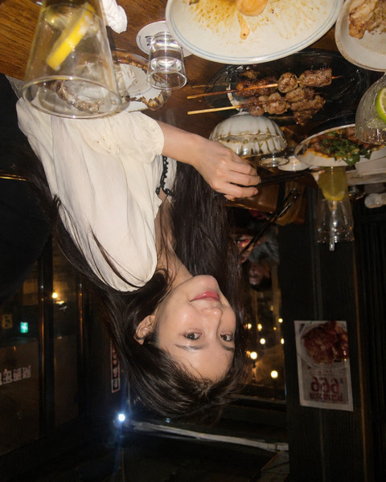
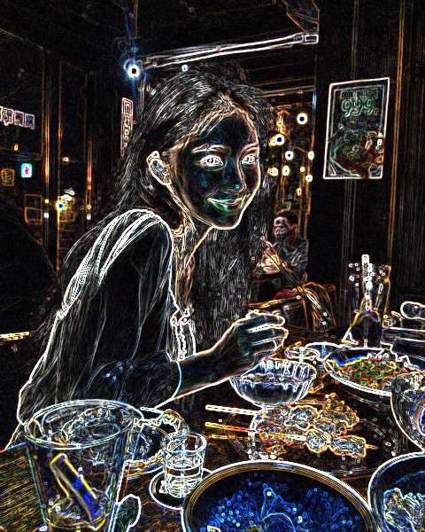
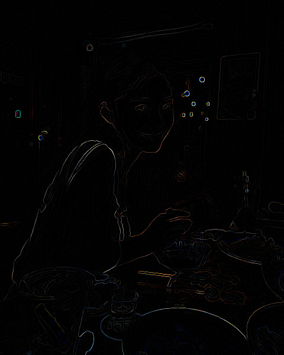
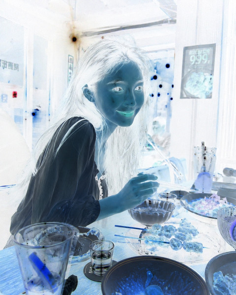
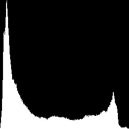
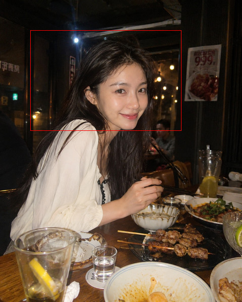

govips: Resize
vips.Resize(im, 0.5, nil)
govips: Resize + KernelNearest
vips.Resize(im, 0.25, &vips.ResizeOptions{
Kernel: vips.Ptr(vips.KernelNearest), // KernelNearest is 0, and it is sent
})
govips: Thumbnail
vips.ThumbnailImage(im, 400, nil)
govips: SmartCrop
vips.Smartcrop(im, 400, 400, &vips.SmartcropOptions{
Interesting: vips.Ptr(vips.InterestingAttention),
})
govips: Crop / ExtractArea
vips.ExtractArea(im, 80, 80, 320, 240)
govips: Rotate
vips.Rot(im, vips.AngleD90)
govips: Similarity
vips.Rotate(im, 12.5, nil)

govips: Flip
vips.Flip(im, vips.DirectionVertical)

govips: AutoRotate
vips.Autorot(im)
govips: Embed / EmbedBackground
vips.Embed(im, 60, 60, 720, 720, &vips.EmbedOptions{
Extend: vips.Ptr(vips.ExtendWhite),
})
govips: Gravity
vips.Gravity(im, vips.CompassDirectionWest, 700, 700, nil)
govips: Replicate
vips.Replicate(im, 2, 2)
govips: Zoom
vips.Zoom(im, 2, 2)
govips: GaussianBlur
vips.Gaussblur(im, 4.0, nil)
govips: Sharpen
vips.Sharpen(im, &vips.SharpenOptions{
Sigma: vips.Ptr(1.5), M2: vips.Ptr(8.0),
})

govips: Sobel
vips.Sobel(im)

govips: (not in govips)
vips.Canny(im, &vips.CannyOptions{Sigma: vips.Ptr(1.4)})

govips: Invert
vips.Invert(im)
govips: Gamma
vips.Gamma(im, &vips.GammaOptions{Exponent: vips.Ptr(2.2)})
govips: Linear / Linear1
vips.Linear(im, []float64{1.4, 1, 0.8}, []float64{-20, 0, 20}, nil)
govips: ToColorSpace
vips.Colourspace(im, vips.InterpretationBW, nil)
govips: Rank
vips.Rank(im, 5, 5, 12)
govips: Recomb
m, _ := matrix3x3(sepia...)
vips.Recomb(im, m)
govips: HistogramNormalise
vips.HistEqual(im, nil)

govips: HistogramFind
hist, _ := vips.HistFind(im, &vips.HistFindOptions{
Band: vips.Ptr(0), // band 0, not every band
})
norm, _ := vips.HistNorm(hist)
vips.HistPlot(norm)

govips: Flatten
// bandjoin_const rather than addalpha: addalpha only became an
// operation after 8.15, and this runs on 8.12 too.
rgba, _ := vips.BandjoinConst(im, []float64{255})
vips.Flatten(rgba, &vips.FlattenOptions{
Background: vips.Ptr([]float64{255, 0, 0}),
})
govips: ExtractBand
vips.ExtractBand(im, 0, nil)
govips: BandJoinConst
vips.BandjoinConst(im, []float64{128})
govips: Composite
blur, _ := vips.Gaussblur(im, 12.0, nil)
vips.Composite2(im, blur, vips.BlendModeSaturate, nil)
govips: Label
txt, _ := vips.Text("vipsx", &vips.TextOptions{
Font: vips.Ptr("sans bold 72"), Rgba: vips.Ptr(true),
})
base, _ := vips.BandjoinConst(im, []float64{255})
vips.Composite2(base, txt, vips.BlendModeOver, &vips.Composite2Options{
X: vips.Ptr(40), Y: vips.Ptr(40),
})

govips: DrawRect
own, _ := vips.Copy(im, nil) // draw_* mutate in place
vips.DrawRect(own, []float64{255, 0, 0}, 60, 60, 300, 200, nil)
govips: ArrayJoin
gray, _ := vips.Colourspace(im, vips.InterpretationBW, nil)
back, _ := vips.Colourspace(gray, vips.InterpretationSrgb, nil)
vips.Arrayjoin([]*vips.Image{im, back}, &vips.ArrayjoinOptions{
Across: vips.Ptr(2),
})
govips: Similarity
vips.Similarity(im, &vips.SimilarityOptions{
Scale: vips.Ptr(0.6), Angle: vips.Ptr(20.0),
})
govips: (not in govips)
vips.Affine(im, []float64{1, 0.3, 0, 1}, nil)
govips: (not in govips)
gray, _ := vips.Colourspace(im, vips.InterpretationBW, nil)
vips.Falsecolour(gray)